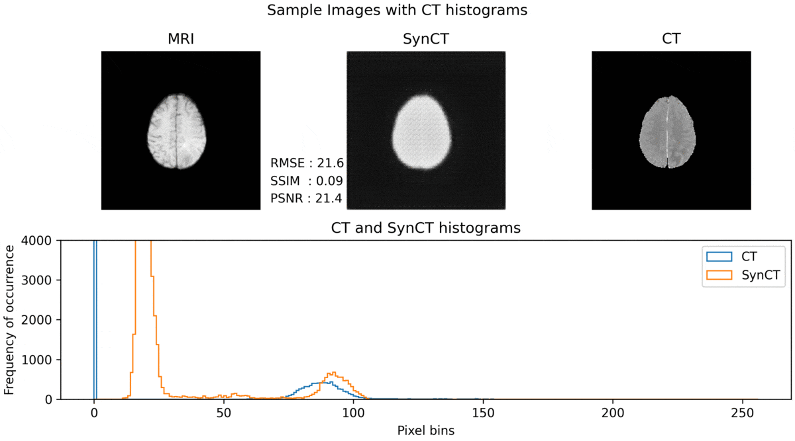

Project Contributers
- Phaneendra Yalavarthy
- Karan Jeswani
Objective
- MRI is more informative (because of multi-parametric images- T1, T2, PD) and safer modality for clinical diagnosis.
- Ability to generate a CT image from the MRI data alone, provides many advantages. Hence MRI-CT conversion is a good idea.
Methodology
- Used Cycle GAN and pix2pix GAN to synthesize CT scan given an input slice of MRI-T1. Both these models are called Conditional GANs because the generator produces an output conditioned on the input.
- Cycle GAN is used whenever we have unpaired images from both modalities. The principle here is that there are 2 generators and 2 discriminators forming 2 GAN models, performing tasks from MRI to CT and CT to MRI respectively. Both these are trained synchronously using Cycle Consistency Loss, and Adversarial Loss.
- Pix2pix GAN is used when paired data is available, which I have. So here, only a single generator is used to synthesize CT scan images given MRI images, A combination of Adversarial Loss and Reconstruction Loss is used to train this model.
Conclusions
- If paired images are available, pix2pix GAN is always going to give better results than Cycle GAN, because pix2pix GAN takes advantage of the correspondence between a pair of images in its use of the Reconstruction Loss (which is just a L1 norm between synthetic image and the ground truth image of the CT scan). This is also the reason it is called pix2pix GAN.
- Synthetic images appear fake, because of slight distortions and loss of texture details, because of lack of paired MRI and CT data available, and because of unstable training process.
- Adding a loss component from a pretrained VGG16 network to the generators is found to improve translated image quality.